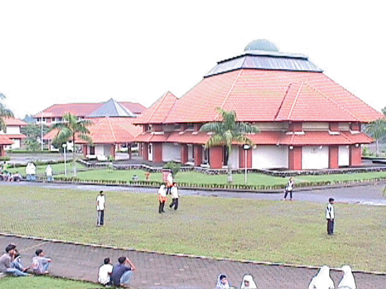

FOTO-FOTO KEGIATAN
Lab. Bahasa
Olahraga
Praktik Biologi
Ekstrakurikuler
Perpustakaan
Keputrian
Praktik Kimia
Lab. Komputer

Lapangan
 Lab. Bahasa
Lab. Bahasa Olahraga
Olahraga Praktik Biologi
Praktik Biologi Ekstrakurikuler
Ekstrakurikuler Perpustakaan
Perpustakaan Keputrian
Keputrian Praktik Kimia
Praktik Kimia Lab. Komputer
Lab. Komputer